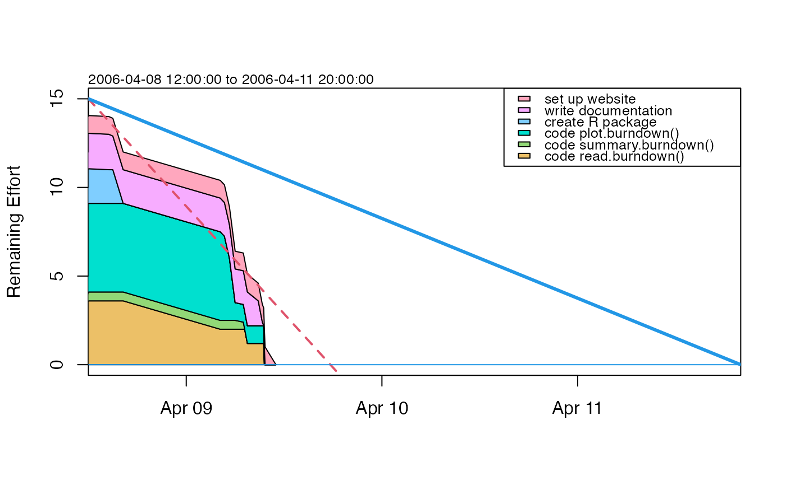

Create a burndown object from the given data.
Arguments
- start
Start date
- deadline
Deadline (end date)
- tasks
Data frame containing the task IDs (may be alphanumeric), their description and effort
- progress
Data frame containing the progress values with task ID, timestamp and work done (either in percentage or absolute)
- progressInPercent
boolean; if set to
FALSE, progress values are treated like absolute values and converted to percentages
Details
Creates a burndown object from the given data; progress may be given in percentage or absolute values.
See also
Other things related to burndown data:
burndown-class,
burndown,
plot,burndown-method,
read.burndown(),
summary,burndown-method
Examples
library(plan)
# same data as in tests/burndown.dat
start <- as.POSIXct(strptime("2006-04-08 12:00:00", "%Y-%m-%d %H:%M:%S"))
deadline <- as.POSIXct(strptime("2006-04-11 20:00:00", "%Y-%m-%d %H:%M:%S"))
tasks <- data.frame(key = c(1, 2, 3, 4, 5, 6),
description = c("code read.burndown()", "code summary.burndown()",
"code plot.burndown()", "create R package",
"write documentation", "set up website"),
effort = c(4, 1, 5, 2, 2, 1),
stringsAsFactors = FALSE)
progress <- data.frame(key = c(1, 2, 1, 2, 4, 5, 4, 1, 3, 3, 3, 2, 2, 1, 5, 5, 5, 1, 3, 6),
progress = c(5, 5, 10, 50, 5, 5, 100, 50, 5, 30, 80, 60,
100, 70, 30, 90, 100, 100, 100, 100),
time = structure(c(1144494000, 1144495800, 1144497600, 1144501200,
1144517400, 1144519200, 1144523760, 1144566600,
1144568460, 1144570680, 1144573200, 1144576800,
1144577400, 1144578600, 1144583400, 1144585200,
1144585800, 1144586100, 1144586400, 1144591200),
class = "POSIXct"),
stringsAsFactors = FALSE
)
b <- as.burndown(start, deadline, tasks, progress, progressInPercent = TRUE)
summary(b)
#> Start, 2006-04-08 12:00:00
#> Deadline, 2006-04-11 20:00:00
#> Key, Description, Effort
#> 1, code read.burndown(), 4
#> 2, code summary.burndown(), 1
#> 3, code plot.burndown(), 5
#> 4, create R package, 2
#> 5, write documentation, 2
#> 6, set up website, 1
#> Key, Done, Time
#> 1, 5, 2006-04-08 08:00:00
#> 2, 5, 2006-04-08 08:30:00
#> 1, 10, 2006-04-08 09:00:00
#> 2, 50, 2006-04-08 10:00:00
#> 4, 5, 2006-04-08 14:30:00
#> 5, 5, 2006-04-08 15:00:00
#> 4, 100, 2006-04-08 16:16:00
#> 1, 50, 2006-04-09 04:10:00
#> 3, 5, 2006-04-09 04:41:00
#> 3, 30, 2006-04-09 05:18:00
#> 3, 80, 2006-04-09 06:00:00
#> 2, 60, 2006-04-09 07:00:00
#> 2, 100, 2006-04-09 07:10:00
#> 1, 70, 2006-04-09 07:30:00
#> 5, 30, 2006-04-09 08:50:00
#> 5, 90, 2006-04-09 09:20:00
#> 5, 100, 2006-04-09 09:30:00
#> 1, 100, 2006-04-09 09:35:00
#> 3, 100, 2006-04-09 09:40:00
#> 6, 100, 2006-04-09 11:00:00
plot(b)
